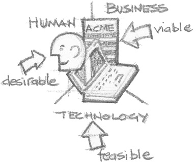

产品概念的发展，就如我之前在《互联网新世界=思维革命》所说，在互联网的世代，其实有着翻天覆地的改变。
用户为皇的年代
受工业革命的启蒙之下，一直以来工商业的发展，都着重于以系统作为营运的核心思路。组织往往希望将工序规范并细化，务求将产能最大化，成本得以压缩。这其实某程度来说，是以组织的思考角度出发，以系统为本，把人围绕系统建构的一套思路。
受工业革命的启蒙之下，企业或产品均以系统为核心，把人围绕系统建构的一套思路
就只在十年左右的时间吧，还不是全球经济一体化，消息的传递交流也没现在那么有效顺畅的年代，市场的需求也倾向比较单一，甚至可透过媒体去创造需求，商品往往在于满足功能的诉求，因此商品可更粗犷的推出市面，以覆盖面和数量取胜。
互联网的出现，很多旧有方法就会过时需要反思，也衍生出不同玩法的可能性。
当然，不能否认，在行业领先的企业现在仍然能主导市场趋势，甚至更有效利用纲络效应，为商品作出定义，以规模覆盖市场。但在这个产能个剩的年代，对于一众企业来说，却是面对行业被垄断，市场空间被挤压这的严峻艰难苦况，在运营上面临巨大的挑战。
但同时间，其实市场上也同时𧗠生了一个千载难逢的机遇。一些人开始质疑工业模式的这套规则，革命俏然发生。
这是一个自我的年代，一些人开始质疑工业模式的这套规则，革命俏然发生
这是一个自我的年代，互联网更容易让我们通过比较，或人与人之间的交流，更容易的让我们探索和了解对产品的各种深度需求。因此：
- 市场需求不再单一
- 互联网有效扩大产品的接触面，部落效应也变相凝聚了一个个向心力极强的细分市场
- 用户的胃口也因林罗满目的商品选择被吊高了，不单以功能需求为主导，更多是整个体验的需求
也因此有人在质疑…为什么需要规模？与其以产品为中心，大规模生产以迎合大众的普遍需求，何不以用家为本，深度关顾用家的深度需要，做出真真正正用家喜爱的产品，再以这股向心力迅速幅射将市场扩大？
与其以产品为中心，大规模生产规模去迎合大众的普遍需求，何不以用家为本，做出真真正正用家喜爱的产品
这也造就出近年在市场一个个的神话。也渐渐，企业更趜向重视发掘和理解用户，重视用户，重视设计，兴起了design thinking的学说 ，也衍生出用户体验设计 - user experience design (UED / UX / XD) 这门专业。
从概念到最终成品的法宝
或许，道理大家都懂，但该如何入手，把用户＋设计为本的精神，开发自己的产品和服务，甚至乎把精神融入到企业的文化当中？
关于设计的理解，可见上周我写的《程序猿vs设计狮》一文
就我在这个专业内的这一段时间内，试试简单的总结一下具体的框架，让大家窥探国外企业怎样跟创意和设计结合的具体做法吧..
在这之前，不得不先说说Design Thinking这个近几年窜红的词汇和主流概念。
Design Thinking是什么？
要说仔细的话，Design Thinking可解释为一套可应用于企业，从探索创新，到概念落实以至设计、执行并持续演进的一套理论框架和法则。由IDEO牛人Tim Brown提出，其实是将设计的终极意义和思维带回根本，并将设计的一些原理有效融入到整个企业运作当中。
若非要为Design Thinking定义的话，可看看Tim Brown以下的解释（抱歉不翻译以下句子了，怕跟原意会有偏颇)：
The one’s sensibility & methods to match people’s needs with what is technologically feasible & what a viable business strategy can covert into customer value & market opportunity
简单说，就是结合用户需求、技术可行性和商业策略这三方面，为用户提供价值，或转化为商机。

其实，要是大家有一直关注我每周写的博客，虽然每个话题都看似离天万丈不着边际，但要仔细发现的话，其实不多不少，这个框架对我去重新思考沉淀以往各种知识经验，形成自己的一套清晰的思路脉络，帮助很大。
好吧…闲话不说，可能理论对大家都很空泛的吧…或许深入一点，看看整个design thinking所提议的一个框架或方向：
{kind=link}
其实当中的各种方法，都不是重点，原意其实更多只是一个参考，不一定是一个千篇一律的流程模版，因为就算你把所有方法都熟瓜烂熟的照板煮碗，若缺乏设计的思维，那一切只会是流于形式，只是为了做而做而已，没有任何意义…
那…什么是设计思维？
说到底，其实就是思考方法的运用。我们除了运用一直在求学和工作上已不停锻炼的收敛性思维（Convergent Thinking）外，也需要发散性思维（Divergent Thinking）去帮助寻求创新。前者作用在于分析评估各方案的利弊，帮助聚焦、整合和筛选。但后者却帮助蕴育创意，运用头脑风暴(brainstorm)等不同技巧，在没有任何约束下大胆探索和假设，并同时严苛批判着每个假设的可行性或引导启发出更好的方向。
3个阶段，7个部骤
上图除了将整个框架分为Inspiration（灵感），Ideate（构思）和Implementation（实现）这三个阶段外，也有较常的更仔细的分为七个部骤：
- Define（定义）
- Research（调研）
- Ideate
- Prototype（样版）
- Choose（筛选）
- Implement（实现）
- Learn（检讨学习）
【题外话】其实我不认同图中把ideate简单翻译作「构思」这个字，但暂时也想不到一个更好的翻译，以我所理解该形容将概念（idea）转化为更具体的方案或形式的一个过程的意思
除此之外，也有Discover，Define，Develop和Deliver这个说法，其实道理也是相约。
同时间，Design thinking其实也跟Lean和Agile（敏捷）的理论背后也是一脉相承的，也就是在这个不停在变的世界内怎样透过快速尝试改进的一种方法态度。
而UX这个行业，也就是因应市场上对用户越趋重视这个需求，配合以上design thinking提出的大框架所形成的一个崭新行业吧。下周，我会带大家尝试以一个UX的角度，更详细深入的介绍在用户体验上一些常用而重要的方法吧。
| ＜上一篇 | 下一篇＞ |